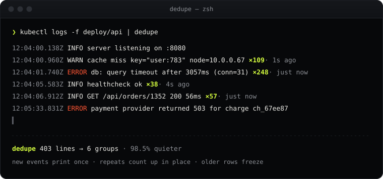

Go CLI · MIT · one binary
Pipe noisy logs in.
Get signal out.
dedupe collapses repeated and near-duplicate log lines as they stream by.
Timestamps, ids, IPs and numbers are ignored, so the 248th db timeout becomes a counter
and the one new error stays in view. It's alert deduplication for your terminal.
go install github.com/narendraio/dedupe@latest
then: tail -f app.log | dedupe · build from source

-
01
Fingerprints, not string matches
Timestamps, UUIDs, hex ids, IPs and numbers are normalized away, so
timeout after 3057msandafter 2998msare one event. -
02
Live, without the mess
On a terminal, counters update in place at 20 fps max. In a pipe, you get a clean stream with
↳ repeated 247 more timeslines. -
03
Know what's loud
--summaryprints the top 10 offenders on exit, Ctrl-C included. Point it at a 1M-line file and get a report in seconds.
Usage
$ tail -f app.log | dedupe $ kubectl logs -f deploy/api | dedupe --summary $ dedupe --no-live --window 10s app.log > quiet.log # flags: --window --live-rows --no-live --summary --keep-quotes --color